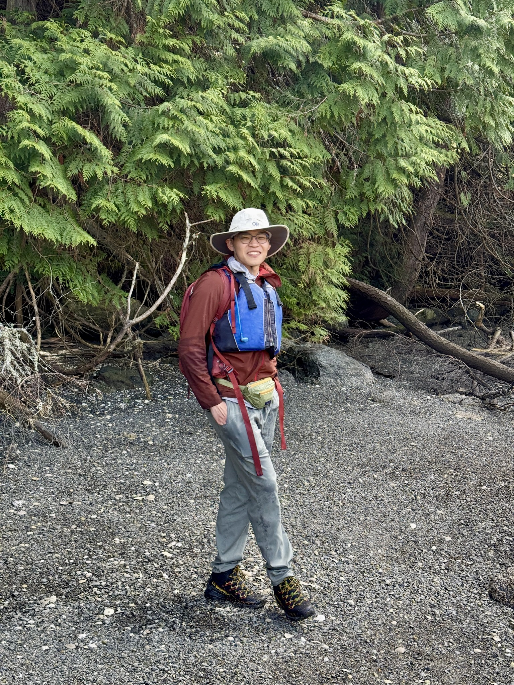

I am a second year MS student in computer science at IIIS@Tsinghua University, supervised by Prof. Wei Xu.MISO: Legacy-compatible Privacy-preserving Single Sign-on using Trusted Execution Environments
Rongwu Xu, Sen Yang, Fan Zhang, Zhixuan Fang.
IEEE Euro S&P 2023, Delft, Netherlands.
LSync: A Universal Event-synchronizing Solution for Live Streaming
Yifan Xu, Fan Dang, Rongwu Xu, Xinlei Chen, Yunhao Liu.
IEEE INFOCOM 2022.
LifeRec: A Mobile App for Lifelog Recording and Ubiquitous Recommendation
Jiayu Li, Hantian Zhang*, Zhiyu He*, Rongwu Xu*, Pingfei Wu*, Min Zhang, Yiqun Liu, Shaoping Ma.
ACM SIGIR Conference on Human Information Interaction and Retrieval 2022.
(* denotes equally contribution)
Teaching Assistant: Operating Systems and Distributed Systems (Lectured by Prof. Wei Xu, Fall 2024).
Teaching Assistant: Distributed Systems (Lectured by Prof. Wei Xu and Prof. Zhixuan Fang, Spring 2022).